生成时间：2026-11-11T15:02:51+08:00
今日保留论文数：5
内容构成：今日新文 5 篇；补充推荐 0 篇；经典旧文精读 0 篇
阅读分层：重点精读 1 篇；相关简报 4 篇。精读依据科学贡献筛选，简报保留方法、结论及局限。
数据源警告
- 本次有 3 个数据源访问异常；完整错误已保留在运行日志中，日报只显示摘要。
- 其他来源：3 个异常。
- 主要错误类型：其他 3 次。
高能天体物理重点
1. Measurement of the Neutrino Spectrum along the Galactic Plane with IceCube
- 来源：arXiv / astro-ph.HE
- 链接：https://arxiv.org/abs/2611.12220
- 作者：IceCube Collaboration, R. Abbasi, M. Ackermann, J. Adams, J. A. Aguilar, M. Ahlers, S. Ali, N. M. Amin
- 公告 / 来源日期：2026-11-10
- 阅读层级：重点精读
- 评分：novelty 9/10，importance 9/10，relevance 10/10，final 10.00/10
- 推荐理由：首次用十年级联样本独立拟合银河平面各段中微子强度和谱，给出内外区与LHAASO同区定量比较。
中文题目：IceCube 分区测量银河平面中微子谱，内银盘在 5 TeV 约亮五倍
做了什么：IceCube 用 2011 年 5 月至 2021 年 5 月的 59,592 个级联事件，对银河平面上的多个区段同时拟合中微子谱指数和强度。以往的全银河模板从伽马射线和宇宙线模型指定各区的相对亮度，此次让每个区段的单幂律谱独立变化。银河内区 $|l|<30^\circ$ 和外区 $|l|>60^\circ$ 均取银纬 $|b|<8^\circ$，在 5 TeV，内区每单位立体角、每味中微子与反中微子的最佳拟合能谱通量约为外区的五倍。内、外区谱指数分别为 $2.76^{+0.18}_{-0.15}$ 和 $3.13^{+0.57}_{-0.37}$，硬度差仍在现有误差范围内。匹配 LHAASO 的一个观测区域后，把伽马通量按质子碰撞产生 π 介子的近似换成中微子通量，得到两种观测在不确定度内相容。
为什么重要：银河平面的中微子已在全局模板搜索中测到。现在可直接用数据检查不同银经上的强度和谱，而这些量曾由模板固定。每立体角通量的内外差异显示内银河的高能辐射更集中。谱差暂时约束较弱，尚难判断亮度变化究竟来自气体与宇宙线空间分布、加速粒子谱变化，还是未分辨源的比例变化。这使各模型可以在同一实际天区和灵敏能段接受检验。
理论 / 观测 / 仪器方法价值：可借鉴的是扩展源分量的联合无分箱似然。各分段的期望信号在观测量空间按仪器接受度和逐事件角分辨率构建，赤经平均的背景需扣回其中混入的信号。分段越细，越能测量区域差异，也会用更多自由度消耗检验功效。论文以伪实验量化这种取舍，使用剖面似然和 Feldman–Cousins 构造不确定度，并明确划出实际贡献拟合的能段。
为什么应该关注：用 LACT、LHAASO 和中微子数据研究银河宇宙线时，比较应先配准银经、银纬与源遮罩，再用中微子的点扩散响应、能谱误差和每立体角口径一起计算。IceCube 的通量包含未分辨银河源，LHAASO 的弥散估计则排除了已知伽马源。可以把带与不带遮罩的 γ 数据分别换算，与同一区段的中微子联合置信域对照。当前数据允许两种 γ 口径，下一轮分区观测的首要判别目标是收紧该区归一化和谱形，以便区分气体相互作用与源的贡献。
展开详细解读：文章讲解、背景、理论、重点章节、图表与相关工作
文章详细讲解
科学问题。 全银河中微子模板能利用预期的亮度和谱提高检测显著性，但整体归一化无法独立给出某段银河的真实强度。IceCube 要回答的是内银河和外银河各有多亮、谱是否不同，并尝试用相同的天区边界和地面伽马射线观测比较。
事件和方法。 级联事件由中微子作用产生的紧凑次级粒子簇发出切伦科夫光。其角分辨率通常约 7°，却能在南天大气μ子背景很强的条件下保持全天区灵敏度。作者将银河平面分为两、三、六段，也为地面阵列的分析区域设置同边界分段。每一段内发射假定均匀，谱为单幂律。段强度、谱指数同时从逐事件能量、方向和方向误差拟合。
结果。 通用分段中以三段的整套假设显著性最高，约 3.84σ。在两个不同方案的内外段比较中，5 TeV 单位立体角通量分别为 $21.4^{+6.8}_{-6.1}$ 与 $4.3\pm2.8$，单位为 $10^{-11}\,\mathrm{TeV\,cm^{-2}\,s^{-1}\,sr^{-1}}$。作者估计剖面区间在此能量相隔约 2.5 个标准差。该差值用于描述通量的区域比较，与分段模型相对于零银河信号的 3.84σ 检验对应不同问题。
边界。 级联角分辨率和外区统计限制了精细重建。各段所报强度是相对各向同性背景的总超额，可含弥散成分和未分辨源。内区两个 KRAγ 变体均与数据相容，GALPROP 的预测低于内区最佳拟合约 3–6 倍，但比较范围、置信域和是否包含未分辨源都影响解释。LHAASO 跨信使相容性也依赖强子 γ 产生与银河内传播近似。
关键结果是怎么做出来的
用十年全天数据约束粗尺度谱。 作者沿用首次银河检测的级联筛选与重建，总计 59,592 个事件，能量从约 500 GeV 到 PeV 区。两、三和六段方案均用 $|b|<8^\circ$，与早期伽马分析的纬宽相近，也与约 7° 的中位角误差匹配。缩窄银纬并不会自动提高这类样本的灵敏度。
同时拟合不同区域的信号。 每个候选事件都根据其重建能量、赤经、赤纬和角误差，得到与各段信号相容的概率密度。有限角分辨率使一个事件可以对不同分段有权重。由于延展银河信号会进入赤经平均后的事件分布，模型先扣除相应的平均信号再构建背景，避免用背景重复吸收银河成分。
比较统计收益和自由度。 三段的拟合为六个自由参数，共得到约 643 个最佳拟合信号事件，3.84σ 是该方案下银河信号的显著性。补充材料用同一 π⁰ 模板和最佳归一化模拟伪数据，固定模板与三段拟合的中位显著性分别为 4.7σ 和 3.2σ，说明更自由的模型预期会牺牲显著性。643 是模型的最佳拟合期望数，不能逐个标出哪些事件来自银盘。
同一能量读强度，再看谱。 图2把最内区和外区的归一化投影到 5 TeV，并用每立体角通量消除天区大小的影响。三个内区经度范围嵌套，结果相关。图3用同一次两段方案绘出二维 68% 区域，此时蓝线内区取 $|l|<60^\circ$，其强度不应直接用图2最内区的五倍。各自的灵敏能段由实际贡献似然的事件决定，超出范围处的曲线主要是幂律外推。
在同一天区比较 LHAASO。 图5用 $15^\circ<l<125^\circ$、$|b|<5^\circ$。遮去已知源的 γ 点按强子假设换算后多在中微子最佳谱下方，含源点多在上方，两组均落在现有允许范围。该区中微子拟合 $\gamma=2.64^{+0.41}_{-0.40}$，与 LHAASO 断裂前的 γ 指数 $2.66\pm0.05_{\rm stat}$ 一致。IceCube 单幂律比较未测出 LHAASO 的谱断点。
展开背景、理论、公式、模型和章节导读
背景知识
宇宙线核穿过银河气体时能发生非弹性碰撞。中性π介子衰变产生 γ 射线，带电π介子及其子代μ子衰变产生中微子。传播中发生味振荡，常用近似是在地球处三味通量约相等。因此，中微子和高能 γ 的空间与能谱对照能检验强子成分。
γ 射线还有逆康普顿和轫致辐射等轻子来源。即便测到银河中微子，仍要区分宇宙线与弥散气体的作用、未分辨加速源和已知天体。模板搜索从伽马和宇宙线数据推定银河中微子形态，可以用较少参数汇总弱信号，却把不同天区的相对强度也写进了假设。
中微子在冰中相互作用产生带电粒子，切伦科夫光到达光学模块的时间与幅度约束事件几何和能量。带长μ子轨迹的事件通常方向精度更好，南天向下方向则遭遇大量大气μ子。本文用近似球形发光的级联事件覆盖全天，在银盘尺度上做统计比较。
先前的 IceCube 银河平面分析提供了整体检测证据，ANTARES 给出过内银脊的独立迹象。各仪器的方向和能量响应不同，因此选用的银纬宽度、事件类型、参考能量和通量单位也不同。本文把分段强度和谱形分别估计，才可以按同一立体角或同一 γ 天区做比较。
基础理论 / 方法脉络
从真实天空到事件图。 每个银河区段的真实信号在区段内按均匀面亮度建模。一个中微子进入冰后的检出概率取决于能量和方向，重建位置再受到点扩散函数影响。不同段的观测事件分布因此既不是顶帽，也不能简单按重建方向硬切。
谱强度和曝光。 $E^2\Phi$ 表示每单位对数能量、每单位面积时间与立体角的能量通量。选择接近主要灵敏能段的参考能量，能减少把某处的归一化误差和全谱斜率混在一起。由拟合事件数转换为天体通量时仍要折叠每段的能量、天区接受度，不能直接用事件数比代替亮度比。
延展源背景。 大气中微子与近似各向同性的天体中微子构成难以去掉的背景。按赤经平均得到经验分布时，银河平面的事件仍被平均进去。将相同信号模型在赤经上平均后扣除其贡献，才可用这份分布在联合似然里估计背景。
区间与检测。 整个银河分段方案相对于零信号的似然比回答是否有过量。某一区的通量及谱指数置信域则在有其他段的条件下剖面化。正通量边界或少量事件可改变检验统计量的分布，Feldman–Cousins 用假设参数下的伪数据排序构造区间，必要时自然转为上限。
由 γ 光子估算中微子。 在质子碰撞的简化产额下，三个 π 介子电荷态数目相近，π⁰ 的两个 γ 各带走约一半 π 能量，带电衰变链的中微子平均能量更低。把到地球后的三味通量按约 1:1:1 分配，就得到固定能量映射下的每味通量关系。谱出现断裂、成分混合或伽马传播吸收时需比这套换算更完整的产额模型。
公式与推导
为一个段设定单幂律。 将正文的段谱改写成以 $E_0=5\,\mathrm{TeV}$ 归一化的等价形式。$E_\nu$ 为真实中微子能量，$\Phi_{0,k}$ 为段 $k$ 在参考能量处的每味微分强度，单位 $\mathrm{TeV^{-1}\,cm^{-2}\,s^{-1}\,sr^{-1}}$，$\gamma_k$ 为无量纲谱指数。
把面亮度变为预期计数。 教学展开补充材料式(S2)后的接受度换算。$T$ 是曝光时长（s），$A_{\rm eff}$ 是在真实能量、方向下的有效面积（cm²），$\Omega_k$ 为天区立体角（sr）。用和通量定义一致的味及粒子/反粒子响应，积分结果 $n_k$ 为无量纲期望事件数。响应在同一区段内也随天区和能量变，等亮的两段未必有同样计数。
构造逐事件的混合信号。 原文式(S2)。$S_i^k$ 是由蒙特卡罗接受度与方向响应计算的段信号概率密度，输入第 $i$ 个事件的重建能量、方向与角误差。$n_s$ 是总银河期望计数，$w_k$ 为事件数份额。以无量纲辅助变量 $v_k$ 作 softmax 保证非负并归一化。
从平均的数据分布扣掉银河信号。 原文式(S3)。$\widetilde D$ 和 $\widetilde S_i$ 分别是赤经平均后的数据与信号概率密度，使用相同观测变量和测度。总事件数为 $N$，数据中含有比例 $n_s/N$ 的信号。扣除后除以剩下的背景比例，得到归一化的背景密度 $B_i^{\rm S}$。
连起分段信号与共同背景。 将上两步代入逐事件似然得到原文式(S4)。每个括号是该事件的混合密度，$N$ 个事件乘积组成似然。$S_i^k$ 依赖 $\gamma_k$，$B_i^{\rm S}$ 也随被扣除信号改变。用多个段联合拟合可在同一背景和角误差模型下处理相邻段。
区分银河过量与某段参数区间。 原文式(S5)比较最大似然 $\mathcal L_{\max}$ 与 $n_s=0$ 的背景似然。再固定一段的 $\Phi_{0,k},\gamma_k$、让其他段取剖面最优，得到供区间使用的无量纲 $\Delta{\rm TS}_k$。补充材料按给定参数伪数据的似然比排序判断哪些点纳入置信域。
用相同的参考能量和立体角比亮度。 这里给出读图用的教学表达。银经 $l$、银纬 $b$ 用弧度，$\Delta\Omega_k$ 为区段面积，$F_k$ 为每立体角的能谱能量通量。图2最内区与外区的 $R(E_0)\simeq21.4/4.3\simeq5$；随着能量变化，谱指数的差会改变强度比。将 $F_k$ 乘以 $\Delta\Omega_k$ 才得到该段面积积分通量。
统一强子换算口径。 原文的跨信使关系，$\Phi_\gamma$ 与 $\Phi_{\nu_i+\bar\nu_i}$ 是相同区域、相同立体角口径的微分通量，$E_\gamma$ 与 $E_\nu$ 用 TeV。近似的二倍能量映射与每味能量通量的一半因子来自 π 介子电荷态、衰变及味混合假设。图5在这些条件下比较 γ 换算点和中微子区间。
模型拟合 / 应用方法
输入与固定设定。 十年级联事件经机器学习筛选和重建，蒙特卡罗给信号概率密度，赤经平均给经验背景。分析定义各段银经银纬、段内均匀分布和单幂律谱；同一段中拟合信号期望与谱指数。各套分段各自拟合，覆盖相互重叠的结果不能拼成独立点。
同时估计多段。 同一拟合里先用权重将总信号分到各段，概率密度考虑接受度和角分辨率。作者在事前模拟和实际揭盲数据中发现所用方案内各段相关性较弱，最多 12 参数的拟合可以近似按每段二维切片查看。同一段的谱指数和归一化依然相关，选择 5 TeV 参考点帮助读比较。
误差和正通量边界。 对每段二维参数作剖面似然，补充材料比较用 Wilks 近似的轮廓与纳入已知系统误差的 Feldman–Cousins 构造。其 68%、90% 区域相近，文中认为统计误差仍占主导。某些外段只给通量或指数约束，说明数据没有在这些位置稳定测出双参数谱。
检验灵敏能段和显著性。 文中用对最佳拟合似然比作正贡献的事件估计敏感能量分布，由此给 68% 与 95% 能段。对比模型时应关注这些能段。固定模板和分段模型在同一伪数据上的显著性差，主要衡量自由度与形态约束的代价，3.84σ 对应所报三段方案。
模型与跨仪器对照。 对于同一内区，银河弥散模型在气体、宇宙线传播和源项上的差异可以改变通量。CRINGE 加入未分辨源后更接近观测，说明归一化偏差还不足以分辨贡献。与 LHAASO 对比时另作同边界拟合，并保留带源遮罩和未遮罩两个 γ 口径，避免把不同天空面积及源群混成一个比值。
重点章节 / 结果段落怎么读
- “Detector & Data Sample”。先读级联事件的南天覆盖与角分辨率，理解 $|b|<8^\circ$ 的选择。
- “Segmenting the Signal Hypothesis”及图1。区分通用银经分段与按伽马观测边界定义的方案，并留意同一段内均匀发射假设。
- “Results”、图2–4与表1。读清每立体角单位、5 TeV 参考能量和内区边界；区分谱指数、归一化和检测显著性。
- “Comparison to Gamma-ray Observations”、图5与表2。核对 LHAASO 对照天区、遮罩以及假定强子转化后的可比量。
- 补充材料“Likelihood Method”及附录 A、B。沿信号扣除和似然比理解统计量，再检查固定模板伪实验及 ANTARES 比较的纬宽区别。
关键图表与解读
图2｜5 TeV 银盘通量与谱指数随银经变化
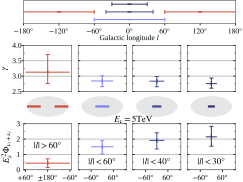
图注：上排为所选银经区域，银纬统一为 |b|<8°，三个蓝色内区相互嵌套。中排为各区拟合谱指数 γ，下排为 5 TeV 的每味能谱通量 E²Φ，单位 10⁻¹⁰ TeV cm⁻² s⁻¹ sr⁻¹。红色为 |l|>60° 外区，蓝色依次为更窄的内区；中、下排之间另画赤道坐标下的天区位置。误差为单参数剖面 68% 置信区间。
怎么看这张图：先看下排最右与最左，比较同一能量和立体角口径下的强度。再读中排误差，谱指数差的证据较弱。相互嵌套的蓝色区结果相关。 直接展示通量的区域变化和谱差的统计限制。
来源与置信度：arXiv HTML；source verified；https://arxiv.org/html/2611.12220v1/fig2.svg
图3｜同一次两段拟合的内外区能谱
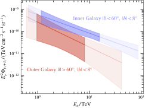
图注：蓝色为 |l|<60° 内区，红色为 |l|>60° 外区，均取 |b|<8°。横轴为中微子能量（TeV），纵轴为每味能谱通量 E²Φ（TeV cm⁻² s⁻¹ sr⁻¹）。实线为最佳拟合，包络为归一化和谱指数二维 68% 置信域所对应的谱范围。深、浅阴影分别示意 68% 和 95% 灵敏能段。
怎么看这张图：此图蓝色区域比图2最内区更宽。对比在两色阴影重合处的谱，离开灵敏能段后的线主要来自幂律外推。 说明单参考点的通量比如何延伸到有相关误差的连续谱。
来源与置信度：arXiv HTML；source verified；https://arxiv.org/html/2611.12220v1/fig3.svg
图5｜与 LHAASO 同天区的 γ—中微子比较
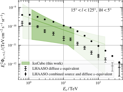
图注：LHAASO 同一银盘区域的 TeV 伽马通量按强子假设换成中微子等效通量，黑色十字为遮罩已知 γ 源的弥散测量，黑点为不遮罩源的总测量。深绿线为 IceCube 幂律最佳拟合，深色区域为 68% 置信域所对应的谱范围，图中标出 68% 和 95% 灵敏能段。横轴为中微子能量（TeV），纵轴为每味能谱通量 E²Φ（TeV cm⁻² s⁻¹ sr⁻¹）。
怎么看这张图：比较黑点和黑十字与绿色谱带的相对位置。两种 γ 口径均相容，数据允许一部分伽马源贡献来自轻子过程。 直接展示相同天区、两种 γ 源遮罩定义下的多信使检验。
来源与置信度：arXiv HTML；source verified；https://arxiv.org/html/2611.12220v1/fig5.svg
强相关工作
IceCube 2023 年首次报告银河平面中微子整体检测，用基于伽马观测的模型模板汇总十年级联数据。本文沿用该样本，把空间相对强度和能谱从模板中释放出来。ANTARES 用较窄的 $|b|<2^\circ$ 银河内脊观测给出约 2σ 迹象，本文在相同银经但更宽的银纬带比较面积积分通量，差异还取决于额外纬度内的信号。 IceCube 银河检测 · ANTARES 内银脊分析
LHAASO-WCDA 发表的银盘弥散 γ 谱为同区换算提供观测输入。KRAγ 的更新版由宇宙线海与气体相互作用推算 γ 和中微子，CRINGE 从宇宙线全局拟合得到弥散分量，并可加未分辨源对照。GALPROP 的新计算也给出宇宙线传播模型的中微子预测。本文把这些量投到最内区直接比，KRAγ 落在允许范围而 GALPROP 低于最佳拟合，比较指向分区统计与源群建模的联合约束。 LHAASO 银盘谱 · KRAγ 更新 · CRINGE · GALPROP
同一事件 / 同类源线索：
相似工作：
基础理论 / 方法工作：
相反观点 / 张力线索：
相关简报
1. Probing the origin of the LHAASO Peanut with a hidden central accelerator
- 来源：arXiv / astro-ph.HE
- 链接：https://arxiv.org/abs/2611.10703
- 作者：Agnibha De Sarkar
- 公告 / 来源日期：2026-11-10
- 阅读层级：相关简报
- 评分：novelty 7/10，importance 8/10，relevance 10/10，final 9.40/10
- 推荐理由：粒子数守恒的沿视线重排定量检验LHAASO花生结构，跨能带比较暴露远端高能不足；隐藏加速器与场形态仍是假定。
中文题目：单一隐藏加速器能解释 LHAASO「花生」的长条，百 TeV 远端仍偏暗
问题、方法与结论：LHAASO 在银纬约 −17.5° 的超高能 γ 图上看到细长弥散带及两个局部过量。论文假定中央有尚未识别的脉冲星及其风云，电子沿有序磁场各向异性扩散、冷却并散射宇宙微波背景。为模拟远端，作者把选中的下游电子重新分配到近视线方向的发光柱，同时扣除它们在原图上的辐射。总谱在调整注入截止和效率后与数据点相容。
意义与贡献：用 LHAASO 的长条加两点源模板分解模拟图，代表性的 20 千年模型在 25–100 TeV 和超过 100 TeV 两带给出约 75% 与 77% 的长条占比，远端均约 10%。较快的沿场扩散可提高远端亮度，部分组合在低能带的远端与中央通量相近，高能带远端仍偏弱。因此总谱相容与空间各分量同时再现是两项不同检验。
可借鉴之处：重排时保持所选电子数，改变柱半径只改变空间集中程度及点源模板分到的份额。配合分能带点扩散卷积，可检查同一粒子群在仪器上如何形成长条和局部峰。这些份额来自对模拟面亮度图的非负模板分解，数据没有进入这一分解似然。
局限与关注点：LACT 可关注不同能带的远端/中央通量比和两端延展度，作为对模型更直接的检验。磁场弯折和柱宽为设定，20 千年也只是例子。极高能电子的拉莫尔半径可与柱宽相近，局部扩散近似还有边界。中心深度射电和 X 射线可进一步查找隐藏脉冲星或风云。
图2｜「花生」在两个能段的模拟面亮度
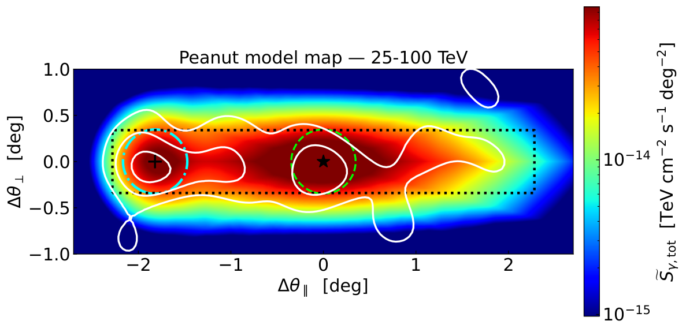
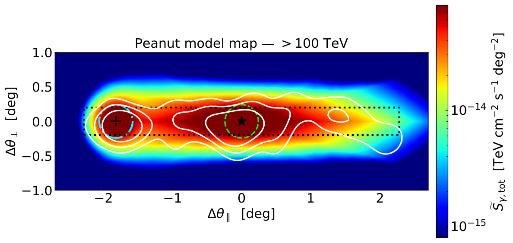
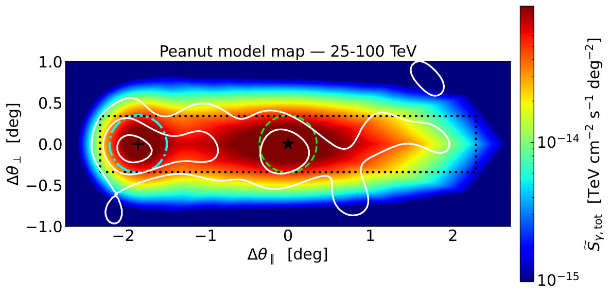
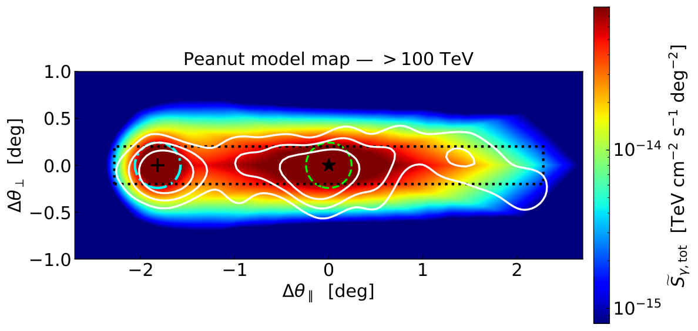
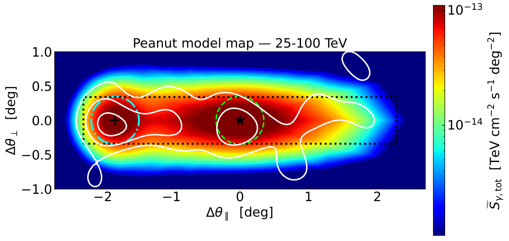
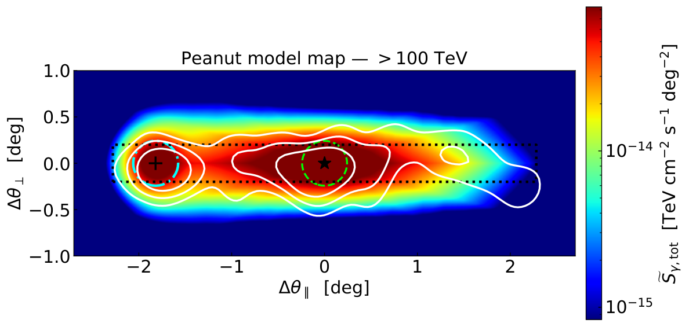
图注：按原图顺序每两张为一组，依次对应表1的 10、20 和 30 千年案例。每组第一张为 25–100 TeV，第二张为 100 TeV 以上。色标为以重排电子柱取代原下游辐射后，经过点扩散函数卷积的总模型面亮度。白实线为 LHAASO 数据 3、5、7σ 等高线，黑点线矩形是各能带的弥散长条模板。绿虚圈、青点划圈为中央与远端点源模板的点扩散 68% 包含半径，黑星标出隐藏加速器，黑加号标出模型远端热点。横纵轴为沿长条和垂直长条的角偏移（度），色标单位为 TeV cm⁻² s⁻¹ deg⁻²。
怎么看这张图：先区分彩色模型和白色观测等高线，再对照每组高能图的中央与远端。较快沿场扩散能加亮远端，但示例在超过 100 TeV 时仍难恢复相对亮度。 显示模板和观测轮廓叠加后仍存在的关键差异。
来源与置信度：arXiv HTML；source verified；https://arxiv.org/html/2611.10703v1/default_peanut_capture_concentration_SBmap_bin0_ext_10000.png；https://arxiv.org/html/2611.10703v1/default_peanut_capture_concentration_SBmap_bin1_ext_10000.png；https://arxiv.org/html/2611.10703v1/default_peanut_capture_concentration_SBmap_bin0_ext_20000.png；https://arxiv.org/html/2611.10703v1/default_peanut_capture_concentration_SBmap_bin1_ext_20000.png；https://arxiv.org/html/2611.10703v1/default_peanut_capture_concentration_SBmap_bin0_ext_30000.png；https://arxiv.org/html/2611.10703v1/default_peanut_capture_concentration_SBmap_bin1_ext_30000.png
2. Depth of Maximum of EAS and Mean Mass Composition of Primary CRs from the Spatial and Temporal Distribution of Cherenkov Light According to TAIGA-HiSCORE Data
- 来源：arXiv / astro-ph.HE
- 链接：https://arxiv.org/abs/2611.12312
- 作者：M. Yu. Ternovoy, V. V. Prosin, E. A. Osipova, I. I. Astapov, P. A. Bezyazykov, A. V. Blinov, E. A. Bonvech, A. N. Borodin
- 公告 / 来源日期：2026-11-10
- 阅读层级：相关简报
- 评分：novelty 7/10，importance 8/10，relevance 10/10，final 9.40/10
- 推荐理由：广角切伦科夫阵列四季实测在重叠能区用两类可观测量交叉重建深度，质量趋势为模型依赖的初步结果。
中文题目：TAIGA-HiSCORE 用切伦科夫光强和脉宽推断宇宙线成分
问题、方法与结论：作者用 TAIGA-HiSCORE 2021–2025 四季约 900 小时数据，重建空气簇射达到最大粒子数时的深度。阵列的两种估计分别使用距簇射轴 80 与 160 米的光密度之比，以及轴距约 300 米的光脉冲半高全宽。前者有约 82 万个事件、覆盖 1–30 PeV，后者有约 3.5 万个事件、覆盖 10–250 PeV。基于 QGSJET-II-04 的转换支持从膝区到约 30–50 PeV 平均对数质量上升，此后出现变轻趋势。
意义与贡献：光强横向梯度与时间展宽都随簇射发展变化，却面临不同的仪器误差。利用两种观测量在交叠能段测同一个平均深度，可比对阵列的重建偏差。两法在交叠处约有 10 g/cm² 的差异，说明很小的统计误差仍需配合方法间的系统检验解读。
可借鉴之处：模拟使用质子、氦、氮和铁引发的 CORSIKA 簇射，把光脉冲与实测电子学响应卷积再标定。较低能量时横向光密度比能使用更多事件，高于约 30 PeV 时近轴幅度饱和，远轴脉宽则继续提供信息。这个分工可用于检查广角光阵列的动态范围与时间响应。
局限与关注点：对 LACT 与地面阵列联合观测，可把两种深度估计的差异作为交叠样本的标定诊断。论文报告的质量趋势依赖所用强子相互作用模型，例如在 50 PeV，用 Sibyll 2.3d 转换同一深度时，平均对数质量比 QGSJET-II-04 高约 0.35。结果仍是初步测量，转用其他阵列需用当地大气与硬件响应重新标定。
图3｜平均簇射最大深度随初级能量变化
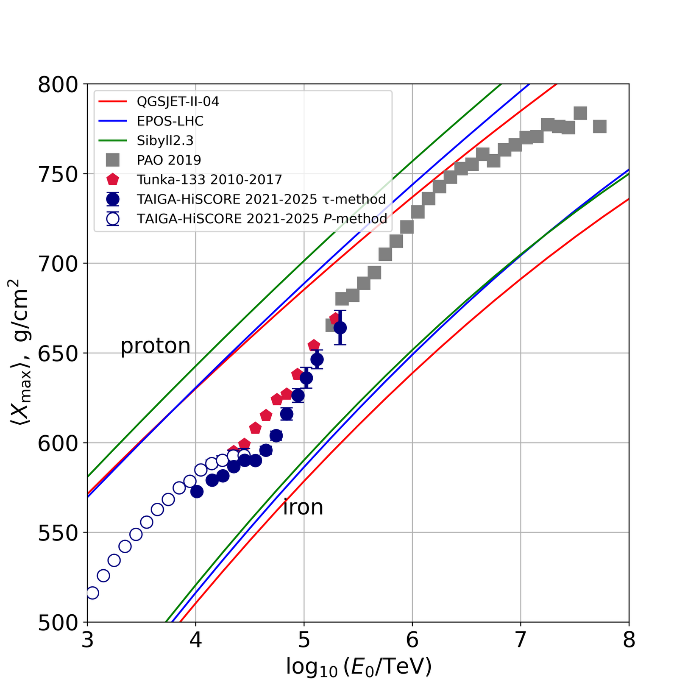
图注：横轴为初级粒子能量与 1 TeV 之比的十进对数，纵轴为平均簇射最大深度（g/cm²）。深蓝空心及实心圆分别为 TAIGA-HiSCORE 横向光密度比法和脉宽法，红五边形和灰方形是 Tunka-133 和 Auger 数据。红、蓝、绿曲线为 QGSJET-II-04、EPOS-LHC、Sibyll 2.3 对质子与铁初级簇射的预期。
怎么看这张图：先在交叠能段比较 TAIGA 两种重建的偏差，再看其他阵列。这里是大气深度估计，下一图的质量还要经过强子模型转换。 直接检验两种仪器观测量重建的同一个深度。
来源与置信度：arXiv HTML；source verified；https://arxiv.org/html/2611.12312v1/figures/figure_3.png
图4｜由平均深度推断的平均对数质量
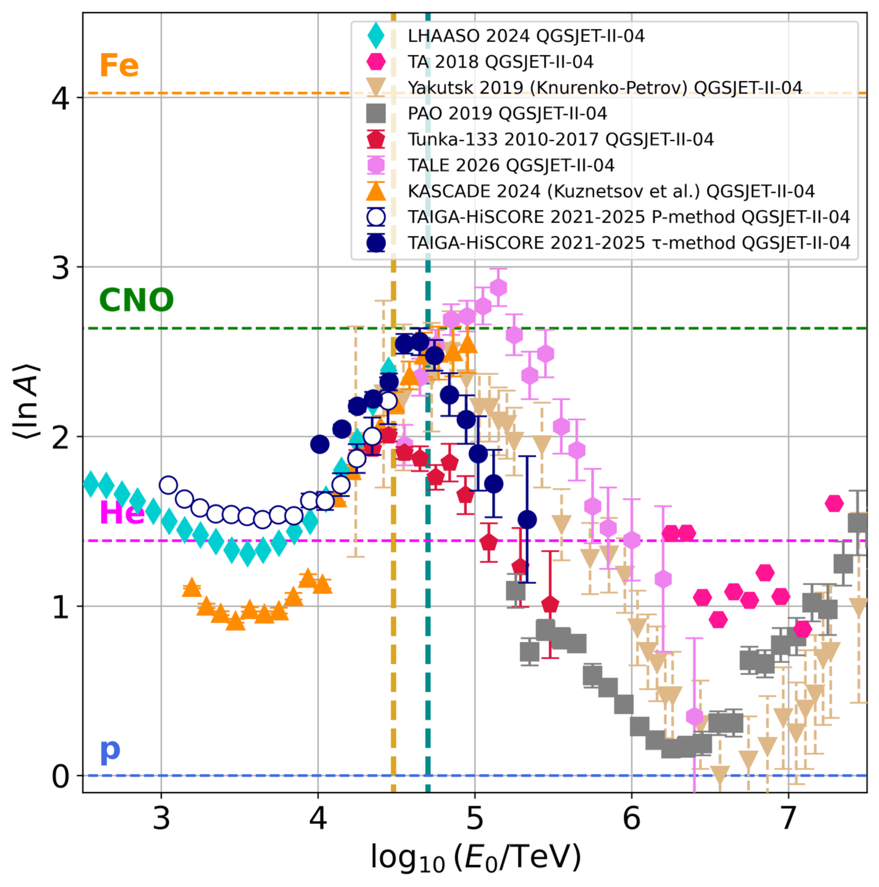
图注：横轴为初级能量与 1 TeV 之比的十进对数，纵轴为无量纲平均对数质量 ⟨ln A⟩。深蓝空心和实心圆为 TAIGA-HiSCORE 两种深度估计经 QGSJET-II-04 转换的结果，其他颜色和形状标出各阵列。水平虚线是质子、氦、碳氮氧组及铁的参考值。
怎么看这张图：先找 TAIGA 在几十 PeV 的转折，再对照图3中的方法差异。曲线和点的质量尺度受各实验的强子模型与能标影响。 保留直接深度与模型依赖质量之间的区别。
来源与置信度：arXiv HTML；source verified；https://arxiv.org/html/2611.12312v1/figures/figure_4.png
3. Stochastic Acceleration Downstream of Astrophysical Shocks
- 来源：arXiv / astro-ph.HE
- 链接：https://arxiv.org/abs/2611.10745
- 作者：Antonio Capanema, Pasquale Blasi
- 公告 / 来源日期：2026-11-10
- 阅读层级：相关简报
- 评分：novelty 8/10，importance 7/10，relevance 10/10，final 9.35/10
- 推荐理由：耦合下游粒子与湍流并作有无注入和球壳比较，给出GeV碰撞谱诊断；真实遗迹的湍流及输运仍需独立约束。
中文题目：超新星遗迹的下游湍流可重塑粒子谱，持续注入是关键
问题、方法与结论：作者计算超新星遗迹正向激波后的二阶费米加速，即粒子被运动中的磁湍流反复散射而获得能量。数值模型同时演化粒子动量扩散、波的级联及波粒能量交换，先对比封闭盒，再跟踪不同时刻过激波的 100 个膨胀球壳。仅把 Bell 不稳定性在上游生成的波带过激波时，有限波能很快被级联和阻尼消耗，粒子谱改动很小。持续补充下游大尺度湍流可明显改变部分壳层的谱。
意义与贡献：若激波后还有加速，当前观测到的 γ 谱就会同时编码粒子穿越激波时的注入与随后数百年的演化。在一个 1000 年、II 型遗迹的基准算例中，含下游注入和波粒反馈的质子碰撞 γ 通量，在约 1–100 GeV 内最高比关闭随机加速的版本高约 50%，能谱平台也更圆。
可借鉴之处：把不同过激波时刻的流体壳分开，能同时处理绝热膨胀、波谱变化和靶气体权重。某一壳层的粒子谱变化大，未必主宰遗迹总 γ 谱。改变湍流注入效率、宇宙线注入效率和级联指数后，再按同一碰撞产额计算 γ 谱，可以定位真正驱动谱形变化的参数。
局限与关注点：对 Fermi-LAT 与地面甚高能阵列联合研究遗迹，可以检查宽带谱的弯曲是否跟随较老的下游区域，再和靶气体分布对照。论文使用稳定、遍及下游的湍流源和彼此独立的球壳，忽略壳间输运与逃逸。真实遗迹中的局域或间歇湍流会改变预期，基准增幅需随具体对象重新计算。
图4｜下游随机加速在模拟遗迹伽马谱中的影响
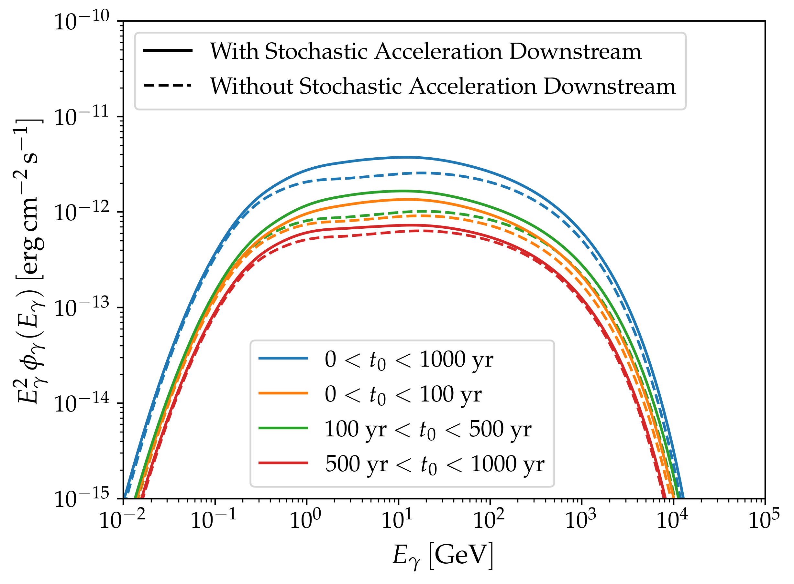
图注：假定距地球 1 kpc 的 II 型超新星遗迹在 1000 年年龄时，下游质子产生的强子伽马谱。设宇宙线注入效率 0.01、下游湍流注入效率 0.1，使用 Kraichnan 级联。蓝线为所有壳层之和，橙、绿、红分别为爆发后 0–100、100–500 和 500–1000 年通过激波的流体。实线含随机加速，虚线为关闭它的对照。横轴为光子能量（GeV），纵轴为能谱通量（erg cm⁻² s⁻¹）。
怎么看这张图：在蓝色实虚线之间读取总谱变化。更早通过激波的壳层有较长下游停留时间，因此局部谱变化可能比积分谱更明显。 连接实际波粒耦合计算与可以观测的强子谱诊断。
来源与置信度：arXiv HTML；source verified；https://arxiv.org/html/2611.10745v1/figures/gammas_xiCR0.01_beta0_eta0.1_tf1000yr_Kraichnan_typeII.png
4. Unveiling a Concentration of Hard X-Ray Point Sources in the Nuclear Stellar Disk with XMM-Newton
- 来源：arXiv / astro-ph.HE
- 链接：https://arxiv.org/abs/2611.11617
- 作者：Shifra Mandel, Kaya Mori, Gabriele Ponti, Samaresh Mondal, Charles J. Hailey, Michael M. Shara, Tong Bao, Heshou Zhang
- 公告 / 来源日期：2026-11-10
- 阅读层级：相关简报
- 评分：novelty 8/10，importance 8/10，relevance 7/10，final 8.65/10
- 推荐理由：PN和MOS在限制计数率或曝光的子样本中均看到核星盘硬源集中，曝光子样本硬度分布检验p值分别为2.3×10⁻¹⁷和3.1×10⁻¹⁵；具体中间极星归类依赖谱模拟。
中文题目：XMM-Newton 在银河核星盘发现更集中的硬 X 射线点源
问题、方法与结论：作者用 XMM-Newton 对银河中心 $20^\circ\times2^\circ$ 的巡天，检验核星盘的点源是否比外侧银盘更硬。剔除可能重复、伪检出、硬度误差较大和疑似前景源后，以 4.5–12 keV 与 2–4.5 keV 计数率之差除以两者之和定义硬度。$|l|<1.3^\circ$、$|b|<0.3^\circ$ 的核星盘内源群较硬。限制计数率或曝光后，差异仍显著。限制曝光的双样本 Kolmogorov–Smirnov 检验中，PN 和 MOS 的 $p$ 值分别为 $2.3\times10^{-17}$ 和 $3.1\times10^{-15}$。
意义与贡献：硬源在核星盘内的数密度分布比软源更陡。把谱硬度分布与气体柱密度图和恒星分布对照，作者发现较深曝光、视线吸收和恒星数密度梯度均不足以单独解释这一集中。这个观测给银河中心硬 X 射线背景中的点源贡献增加了空间约束。
可借鉴之处：暗源很难逐个拟合能谱。文章把两类探测器分开计算硬度，用亮源子样本控制完备性，再用相近曝光样本检查中心区域的深曝光是否放大差异。用同一仪器响应模拟热和非热谱、再加气体吸收，可以找出硬度仍可区分的源群，以及温度和吸收退化严重的区域。
局限与关注点：对银河中心的宽带研究，核星盘硬源集中意味着构造未分辨 X 射线背景时需要考虑位置与源群成分。磁性吸积白矮星中的中间极星能通过较热的等离子体和局部遮蔽产生极硬谱，是作者提出的一种解释。硬度统计难以单独确定白矮星质量与吸积类型，还需源级的脉动、谱线或更宽能段测量。
图3｜用计数率与曝光筛选检验核星盘硬源
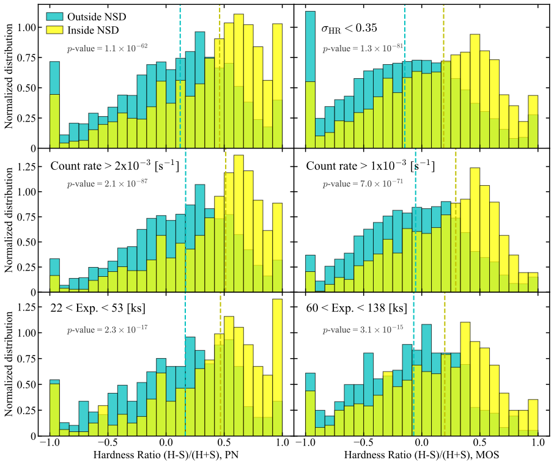
图注：横轴为 X 射线硬度比，纵轴为各组归一化分布。黄色为核星盘内源（|l|<1.3°、|b|<0.3°），青色为外侧源；左列为 PN，右列为 MOS，相应颜色的竖线为各组中位数。上排为硬度误差小于 0.35 的筛选样本，中排要求 2–12 keV 计数率高于 PN 的 2×10⁻³ s⁻¹ 或 MOS 的 1×10⁻³ s⁻¹。底排取 PN 曝光 22–53 ks 和 MOS 曝光 60–138 ks。图内给出各组双样本 K–S 检验的 p 值。
怎么看这张图：在每列由上到下比较黄色和青色的中位数。计数率与曝光分别受限后，内区仍整体偏硬。这是源群分布的检验，图中的单个硬度值还需结合吸收与源谱判断。 两套相机响应下直接展示硬度差在不同观测条件筛选中的稳定性。
来源与置信度：arXiv HTML；source verified；https://arxiv.org/html/2611.11617v1/hr_3filt_pn_mos_w_nobkg.svg
说明
评分由 LLM 给出初评，再由本地阈值策略过滤；IACT、TeV 伽马射线和高能中微子天文学按重点方向处理。